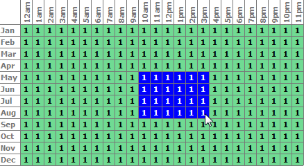
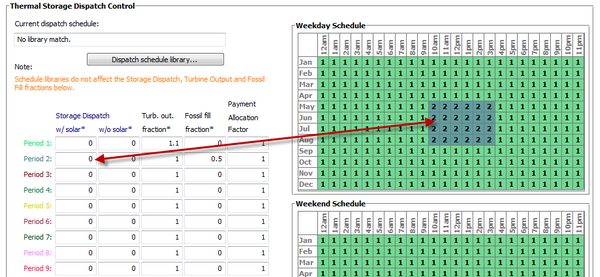

To view the Thermal Storage page, click Thermal Storage on the main window's navigation menu. Note that for the empirical trough input pages to be available, the technology option in the Technology and Market window must be Concentrating Solar Power - Empirical Trough System.
A thermal energy storage system (TES) stores heat from the solar field in a liquid medium. Heat from the storage system can drive the power block turbine during periods of low or no sunlight. A TES is beneficial in many places where the peak demand for power occurs after the sun has set. Adding TES to a parabolic trough system allows the collection of solar energy to be separated from the operation of the power block. For example, a system might be able to collect energy in the morning and use it to generate electricity late into the evening.
In direct systems, the heat transfer fluid itself serves as the storage medium. In indirect systems, a separate fluid is the storage medium, and heat is transferred from the HTF to the storage medium through heat exchangers. The TES system two tanks, pumps to circulate the liquids, and depending on the design, heat exchangers. The two-tank system consists of a hot tank to store heat from the solar field, and a cold tank to store the cooled storage medium after the power block has extracted its energy.
The user inputs on the Thermal Storage page are divided into two groups. The thermal energy storage (TES) group defines the thermal energy storage capacity and type along with some efficiency parameters. The thermal storage dispatch controls group variables determine the operation of the storage and fossil back up systems.
For a more detailed description of the model, please download the CSP trough reference manual from the SAM website.

Thermal Energy Storage (TES)Equiv Full Load Hours of TES hours (hours) The thermal storage capacity expressed in number of hours of thermal energy delivered at the power block's design thermal input level. The physical capacity is the number of hours of storage multiplied by the power block design thermal input. Used to calculate the TES maximum storage capacity. Storage System Configuration The current version of SAM models a two-tank TES consisting of a cold storage tank and hot storage tank. Storage Fluid Type The storage fluid, used to determine the heat-exchanger duty. When the storage fluid and solar field heat transfer fluid (HTF) are different, the system is an indirect system. When the storage fluid and solar field HTF are the same, the system is a direct system that uses the solar field HTF as the storage medium. Turbine TES Adj Efficiency SAM applies the TES efficiency adjustment factor to the turbine efficiency for trough systems with storage to account for the lower steam temperature that results from imperfect heat exchange in the storage system. Used to calculate maximum TES discharge rate. Also used to calculate a TES correction factor. Turbine TES Adj Gross Output Efficiency adjustment factor. Used to calculate maximum TES discharge rate. Initial Thermal Storage (MWht) The amount of energy in storage when the simulation starts, at midnight on January 1. The default value is zero. Tank Heat Losses (MWht) Storage tank thermal losses. SAM subtracts value from the total energy in storage at the end of each simulation hour. See the table below for suggested values. An increase in the hours of thermal storage requires a both an increase in the solar field size to minimize the levelized cost of energy (LCOE) for the system, and an increase in the tank heat losses to account for the larger tank. The following table shows suggested tank heat loss values for three sample systems over a range of thermal storage capacities. The relationship between tank heat losses and hours of thermal storage is linear, so you can extrapolate to estimate values for storage capacity values not on the table.
Maximum Energy Storage (MWht) The maximum thermal energy storage capacity of the TES. Maximum Energy Storage = Equiv. Full Load Hours of TES × Design Turbine Thermal Input Design Turbine Thermal Input (MWt) The thermal input requirement of the power block to operate at its design point. Used to calculate the following dispatch parameters: power block input limits, power block load requirement, TES maximum storage capacity, and the start-up requirement Max Power to Storage (MWt) Maximum TES charge rate. Used in the dispatch calculation when energy from the solar field exceeds the power block load requirement. When Storage Fluid Type is different from Solar Field HTF Type on the Solar Field page, SAM assumes that the TES includes a heat exchanger, and Heat Exchanger Duty > 1: Max Power to Storage = Heat Exchanger Duty × Design Turbine Thermal Input When the TES and Solar Field fluids are the same, SAM assumes there is no heat exchanger, and Heat Exchanger Duty = 1: Max Power to Storage = Solar Multiple Calc × Max Turbine Over Design Operation × Design Turbine Thermal Input Where Design Turbine Thermal Input is the Design Cycle Thermal Input value from the Power Block page, Max Turbine Over Design Operation is from the Power Block page, and Solar Multiple Calc is from the Solar Field page. Max Power From Storage (MWt) Maximum TES discharge rate. Used in the dispatch calculation when energy from the solar field is less or equal to than the power block load requirement. When Storage Fluid Type is different from Solar Field HTF Type on the Solar Field page, SAM assumes that the TES includes a heat exchanger, and Heat Exchanger Duty > 1: Max Power From Storage = Maximum Power to Storage × (Turbine TES Adj Gross Output ÷ Turbine TES Adj Efficiency) When the TES and Solar Field fluids are the same, SAM assumes there is no heat exchanger, and Heat Exchanger Duty = 1: Max Power From Storage = Design Turbine Thermal Input × Max Turbine Over Design Operation × (Turbine TES Adj Gross Output ÷ Turbine TES Adj Efficiency) Where Design Turbine Thermal Input is the Design Cycle Thermal Input value from the Power Block page, Max Turbine Over Design Operation is from the Power Block page. Heat Exchanger Duty Applies only to indirect thermal storage systems that use a different storage fluid and solar field HTF. Used to calculate the maximum TES charge rate. When the solar multiple is greater than one: Heat Exchanger Duty = Solar Multiple Calc - 1 When the solar multiple is equal to or less than one: Heat Exchanger Duty = 0 Where Solar Multiple Calc is from the Solar Field page. Thermal Storage Dispatch ControlThe thermal storage dispatch control variables determine how energy is dispatched from the TES, what load level the power block and optional backup boiler operate, and the times that the optional PPA power price multipliers apply. Current Dispatch Schedule The name of the dispatch schedule displayed in the Weekday and Weekend schedule matrices. Dispatch Schedule Library Click to choose a dispatch schedule from the library. See Storage and Fossil Dispatch Controls for details. The storage dispatch control variables each have six values, one for each of six possible dispatch periods. They determine how SAM calculates the energy flows between the solar field, thermal energy storage system, and power block. The fossil-fill fraction is used to calculate the energy from a backup boiler. Storage Dispatch Fraction with Solar The fraction of the TES maximum storage capacity indicating the minimum level of charge that the storage system can discharge to while the solar field is producing power. A value of zero will always dispatch the TES in any hour assigned to the given dispatch period; a value of one will never dispatch the TES. Used to calculate the storage dispatch levels. Storage Dispatch Fraction without Solar The fraction of the TES maximum storage capacity indicating the minimum level of charge that the storage system can discharge to while no solar resource is available. A value of zero will always dispatch the TES in any hour assigned to the given dispatch period; a value of one will never dispatch the TES. Used to calculate the storage dispatch levels. Turbine Output Fraction The fraction of design-point thermal load to the power block before part-load and temperature efficiency corrections. These values allow the user to dispatch the power cycle at a desired level according to the time-of-dispatch period. Fossil Fill Fraction A fraction of the power block design turbine gross output from the Power Block page that can be met by the backup boiler. Used by the power block module to calculate the energy from the backup boiler. If you specify a fossil fill fraction other than zero for one or more periods and want to account for fuel costs in the financial model, you should assign a fossil fuel cost on the Operating Costs page. |
||||||||||||||||||||||||||||||||||
The thermal storage dispatch controls determine the timing of releases of energy from the thermal energy storage and fossil backup systems to the power block. When the system includes thermal energy storage or fossil backup, SAM can use a different dispatch strategy for up to six different dispatch periods. Storage DispatchSAM decides whether or not to operate the power block in each hour of the simulation based on how much energy is stored in the TES, how much energy is provided by the solar field, and the values of the thermal storage dispatch controls parameters. You can define when the power block operates for each of the six dispatch periods. For each hour in the simulation, if the power block is not already operating, SAM looks at the amount of energy that is in thermal energy storage at the beginning of the hour and decides whether it should operate the power block. For each period, there are two targets for starting the power block: one for periods of sunshine (w/solar), and one for period of no sunshine (w/o solar). The turbine output fraction for each dispatch period determines at what load level the power block runs using energy from storage during that period. The load level is a function of the turbine output fraction, design turbine thermal input, and the five turbine part load electric to thermal factors on the Power Block page. For each dispatch period during periods of sunshine, thermal storage is dispatched to meet the power block load level for that period only when the thermal power from the solar field is insufficient and available storage is equal to or greater than the product of the storage dispatch fraction (with solar) and maximum energy in storage. Similarly, during periods of no sunshine when no thermal power is produced by the solar field, the power block will not run except when the energy available in storage is equal to or greater than the product of storage dispatch fraction (without solar) and maximum energy in storage. By setting the thermal storage dispatch controls parameters, you can simulate the effect of a clear day when the operator may need to start the plant earlier in the day to make sure that the storage is not filled to capacity and solar energy is dumped, or of a cloudy day when the operator may want to store energy for later use in a higher value period. Fossil DispatchWhen the fossil fill fraction is greater than zero for any dispatch period, the system is considered to include fossil backup. The fossil fill fraction defines the solar output level at which the backup system runs during each hour of a specific dispatch period. For example, a fossil fill fraction of 1.0 would require that the fossil backup operate to fill in every hour during a specified period to 100% of design output. In that case, during periods when solar is providing 100% output, no fossil energy would be used. When solar is providing less than 100% output, the fossil backup operates to fill in the remaining energy so that the system achieves 100% output. For a fossil fill fraction of 0.5, the system would use energy from the fossil backup only when solar output drops below 50%. The boiler LHV efficiency value on the Power Block page determines the quantity of fuel used by the fossil backup system. A value of 0.9 is reasonable for a natural gas-fired backup boiler. SAM includes the cost of fuel for the backup system in the levelized cost of energy (LCOE) and other metrics reported in the results, and reports the energy equivalent of the hourly fuel consumption in the time series simulation results. The cost of fuel for the backup system is defined on the Operating Costs page. Defining Dispatch SchedulesThe storage dispatch schedules determine when each of the six periods apply during weekdays and weekends throughout the year. You can either choose an existing schedule from one of the schedules in the CSP trough TES dispatch library or define a custom schedule. If your analysis includes PPA price multipliers and you want to use the same schedule for the multipliers and for the power cycle dispatch control, click Copy schedule from TOD Factors page to apply the TOD Factors schedule matrices to the dispatch schedule matrices. To specify a weekday or weekend schedule: 1.Assign values as appropriate to the Storage Dispatch, Turbine Output Fraction, and Fossil Fill Fraction for each of the up to nine periods. 2.Use your mouse to draw a rectangle in the matrix for the first block of time that applies to period 2.  3.Type the number 2. 4.SAM shades displays the period number in the squares that make up the rectangle, and shades the rectangle to match the color of the period.  5.Repeat Steps 2-4 for each of the remaining periods that apply to the schedule. |